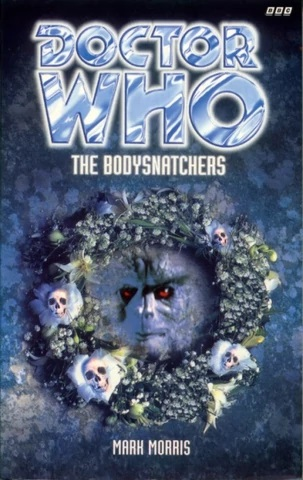

|
The Bodysnatchers
|
BASIC PLOT DOCTOR COMPANIONS MATERIALISATION CIRCUIT Pg 208 On board the Zygon craft, sometime in the morning of the 13th January. Pg 238 Back on the Towpath, at about 10.00 on the 13th. Pg 243 The HADS causes the TARDIS to relocate a little further up the Towpath. Pg 279 Presumably the Doctor must materialise once more, on the evening of the 13th, in order to return Litefoot's gun, but we don't see it happen. PREPARATORY READING CONTINUITY REFERENCES Pg 12 The Doctor manages to set fire to pages of his copy of The Strand magazine, Christmas 1893, which contains the final part of Conan Doyle's 'The Final Solution'. It's the reason he goes to London 1894 in this book, and he's still looking for a copy at the beginning of Genocide. That said, he gets a copy in the epilogue of this novel, but that bit's set ages in his future. Got that? Good. Pgs 12-13 "[...] settle down with a nice pot of Darjeeling and a plate of dry-roasted gumblejack fritters." Gumblejack were the fish that were being fished for in The Two Doctors. This is final proof, if any were needed, that the Eighth Doctor, unlike his predecessor, is not a vegetarian. Pg 13 "His last violent regeneration, during which he had come closer to death than ever before, had shaken up his molecules so comprehensively that certain aspects of his character had come to the fore that had previously been buried so deeply within him they had seemed virtually nonexistent. His romantic nature, for one. And his tendency to babble about his origins for another." This is a handwavy apology for both the kiss and the sudden desire to tell everyone that he's half-human in the Telemovie. Mention of Grace, also from the Telemovie. Pg 14 A door is "propped open with a dog-eared copy of The Ripple Effect by Anton Bocca." The Bocca scale was the scale of time distortion mentioned in The Two Doctors. Pg 15 "DESTINATION - LONDON, EARTH. LOCAL DATELINE - 11.01.1894. Victorian era." This is consistent with how the destination monitor was shown in the TV movie, although still doesn't explain why 1999 is referred to as the Humanian era. Unless it's because that's where he picked up that Human, Ian. "The outfit consisted of a coral-coloured jacket with puffed sleeves, blue bloomers, black Victorian boots and a straw boater-type hat with a coral-coloured band." This is Leela's outfit from The Talons of Weng-Chiang, although it appears to be Romana's boater hat, unless I'm misremembering. Mention of Nyssa - in fact, Sam lives in her old room, albeit a little restructured since then. Pg 16 "On top of the pile of clothes was a white business card with a weird symbol on it." This appears to be the same as the calling card the Doctor left in Remembrance of the Daleks. Maybe he had some spares left over and started using them for any old thing, instead of just antagonising old enemies. Pg 18 "'Doctor?' 'Hmm?' 'Do you know who Jack the Ripper was?' This time the Doctor looked at her directly. He appeared to consider her question for a moment, then said quietly. 'I know many things. Too many, I think, sometimes.'" He then goes on to completely dodge the question, presumably because IT WAS HIM! Matrix. Pg 20 "No no no no no" It's not too bad in this book, but the Doctor's irritating repetition thing from the Telemovie still lurks in the background on occasion. "'Only London smells like this,' said the Doctor cheerfully. 'It has a certain... ethos. A certain bouquet.' He paused, looking puzzled. 'What's the matter?' 'Deja vu,' said the Doctor, then shrugged." He's quoting from City of Death, then, when he realises he's done so, he quotes from City of Death again to point it out. Pg 23 "'But that's mental. I was born. I'm here, aren't I?' 'That's open to debate,' murmured the Doctor." It's unlikely, but possible, that this is subtle foreshadowing to the discovery that Sam has two sets of bio-data, and that this version of her shouldn't really be there at all, as we will later find out in Alien Bodies. Pg 33 "'My name is Dr John Smith and this is my niece, Miss Samantha Jones.' Raising his voice above Sam's muttered response of 'Smith and Jones. Nice one.'" This joke's been done before, at the end of The Eight Doctors, and Sam made it, so it's unclear why she's moaning about it now. Maybe she's just being stroppy. Which would not be out of character for her in this book. "Four Ranskill Gardens" is still Professor Litefoot's address. We've already visited here in The Talons of Weng-Chiang. Pg 37 "'Forgive me, Professor,' he said. 'It's just that I feel as though I do know you very well. The Doctor often talks about the Weng-Chiang business and the gallant part that you played in it.'" The Talons of Weng-Chiang, obviously. There then follows a brief summary of said adventure. It gets mentioned a lot, so I've only recorded instances which have a bearing on the developing plot of this novel. Pg 38 Brief mention of Henry Gordon Jago, who's not in this book because he's been "rather dyspeptic of late" and is "spending a few weeks with his sister in Brighton." Pg 40 "Leela is married, with children I believe." Consistent with what the Doctor learned at the end of Lungbarrow. Pg 42 "Was it therefore, too fanciful to hope and believe that one day Great Britain would have not only a female monarch but a female prime minister?" This sounds like a reference to Margaret Thatcher, but it isn't - it's a reference to the unnamed female prime minister of Terror of the Zygons. Pg 50 "Then the Doctor blinked and said gently, 'There's no need to worry, Constable. Your wife will recover.'" The Doctor does his seeing into people's futures bit that he developed spontaneously in the Telemovie Pg 53 "After alighting from a cab, having first absent-mindedly tried to pay the driver in a Delphonian coinage known as dur'alloi." Delphons communicate with their eyebrows, so I'm dying to know what was written on the coin. We learned about Delphon, incidentally, in Spearhead from Space. Pg 60 The Doctor claims to have been asking factory workers about "Slugs and snails and puppy dogs' tails. String and sealing wax and other fancy stuff." There's quite a nice resonance, probably not deliberate, to Puff the Magic Dragon, which is often quoted by Paul Cornell, most particularly in Love and War and Human Nature. Pgs 80-81 "He held up his hand, and as if by magic, a small white business card appeared in it, which he handed to Emmeline." Very Remembrance of the Daleks again. Pg 89 "I've been bitten by a vampire. I've even killed a vampire." Vampire Science. Pg 90 "Did the Doctor find you floating down the Amazon in a hat box too, my dear." A reference to the Doctor's excuse for Leela's behaviour in Talons, and itself a reference to the works of Oscar Wilde. But also see Continuity Cock-Ups. Pg 93 The Doctor uses the term 'Eureka' as he did in The Talons of Weng-Chiang. On this occasion, Litefoot doesn't ask what it means, as he's already been told in the former adventure. Pg 106 Litefoot still keeps his laundry in wicker baskets, as he did in Talons, despite learning of the potential dangers during that story. Pg 118 "'Do you think it's quite safe?' 'Oh, I shouldn't think so for a minute.'" The Web of Fear. Pg 124 "Sam opened her mouth to protest, but the Doctor effectively plugged it with a jelly baby which he produced out of nowhere." And we thanked him for it! Jelly babies are, of course, an old Fourth Doctor staple. Pg 126 "Absently he patted her arm. 'Brave heart, Tegan,' he murmured." It's utterly gratuitous, but, obviously, a reference to the famous phrase so oft-uttered between the Doctor and his Australian friend. Pg 129 "'You've come across them before then' 'Yes, though only a small warrior faction. I encountered them about ninety years from now, give or take a decade or so.'" Terror of the Zygons. The 'give or take a decade' neatly sidesteps any problems with UNIT dating. Pg 133 "Very nasty, that. They'll need a trilanic flange oscillator with detachable spirons to fix that little lot." I'm prepared to bet all the money in my pockets against all the money in your pockets that the Doctor made that little piece of technobabble up completely off the top of his head. Pg 137 "As the light faded, Sam blinked the after-image of the flare away and peered down at the place where the sonic screwdriver had been. There was now nothing left of it but a blackened, twisted lump of smoking metal. 'I hate it when people do that,' said the Doctor ruefully. 'It took me long enough to get round to building a new one after the last time.'" Reference to when his first sonic screwdriver was destroyed in The Visitation. And see Continuity Cock-Ups. Pg 138 "'Hang on, that means we do have a choice,' said Sam with a cheeky bravado that she didn't really feel. A Zygon swung round on her, hissing. 'All right, all right,' she said, holding up her hands and stepping hastily towards one of the alcoves. 'Just don't tell me it's only a shower, that's all.'" This arguably qualifies for the prize for 'worst taste joke in the entire history of Doctor Who'. I accept that Sam's not the most sensitive person around at the moment, but such a casually flippant reference to the method of extermination of 5 million European Jews during the Second World War would be considered shocking and out of character for the Master. Pg 147 And on the subject of stupid things: "I want the lock repaired without delay. No detail, however small, must be overlooked. Do it now, Veidra, and retain your human form until the task is completed." There is absolutely no reason for Balaak to order Veidra to maintain his human form - in fact, his Zygon form would have been much safer and more convenient. The only reason that this is done is so that Jack can attack Veidra without knowing that he's an alien, and thus Veidra can get killed thus advancing the story further. It just screams 'plot contrivance'! Pg 155 "Five centuries ago, our home planet, Zygor, was destroyed in a stellar explosion instigated by our enemies, the Xaranti." The Xaranti are the alien invaders in Deep Blue. Pg 157 "I call it the state-of-grace circuitry, mainly because I can't remember what the technical term for it is. It's linked in to the TARDIS's telepathic circuits and when it's fully working negates all hostile and aggressive actions within the TARDIS itself." The Doctor's been trying to fix this, on and off, since Arc of Infinty, with mixed success. Note that this is a different TARDIS to the one that had the system fully functional in Blood Heat. Pg 172 "Humming a Draconian lament, he placed the carpet bag he was carrying on the wet cobbles." Draconians are from Frontier in Space and books too numerous to mention. Pg 187 "What was it Ace had once said to him? That he must have a homing pigeon in his head." I don't recall this ever happening, so it must be an unrecorded adventure, although it makes me briefly think of the short story 'Stop The Pigeon' in Short Trips. Pg 208 "'How long is a piece of Taran grappling twine?' replied the Doctor cryptically." The Androids of Tara, mentioned here for no apparent reason. Pg 210 "We can't undo what's already happened, Sam. If we start to unravel the past, it will go on unravelling. We will do untold damage." This is consistent with the Doctor's explanation, at the beginning of Time-Flight, as to why they couldn't go back and save Adric before he crashed into the Earth. Pg 221 "However, more alarmingly for Tuval, the console suddenly seemed to become 'live', threads of crackling blue light dancing across it and skittering up the outside of the time rotor like barbed wire made of electricity." Interestingly, the Doctor's new trap for those who he doesn't wish to use to the console is very similar to what he did to Ian way back in An Unearthly Child. Pg 232 "There was an almighty KKLAK! And the walls and ceiling split in several places at once." The sound of the Zygon ship collapsing is interestingly identical to the sound made by the jaws of a pterodactyl, at least according to the first version of the cover of Doctor Who and the Dinosaur Invasion. Pg 234 "She sat on the edge of the chute and nodded at his slime-encrusted frock-coat. 'Hope that's not dry-clean only.' He smiled. 'I've got others.'" Which is interesting, as he nicked this one in the Telemovie. Seeing I makes it clear that he has a tailor on Savile Row who keeps him in a permanent supply. Pg 242 "He found himself in what appeared to be a vast, shadowy cathedral, the ceiling of which was so high he could not even discern it. The cathedral was dominated not by an altar, however, but by a gigantic column filled with rods of light which was attached to a six-sided console. Part of the cathedral had been converted into a library, another part into a display for every conceivable type of chronometer. There was even a garden area with a bubbling stone fountain and a vast multidrawered cabinet covering one entire wall." The TARDIS console room, aside from the garden area, is described exactly as it was in the film. Pg 243 "Litefoot noticed a screen beside the console flashing with the message: HOSTILE ACTION DESPLACEMENT SYSTEM OPERATIVE." The HADS first appeared in The Krotons. Pg 248 "The Doctor gulped air, then began to choke, water streaming from his nose and mouth. He could survive without air for far longer than any human being, but it really did feel as though he had been down here for hours." The Doctor's ability to survive without air was seen in Terror of the Zygons, amongst numerous other places. Pg 264 The Doctor has his Horse Whisperer moment: "'What was that song you were singing, Doctor?' Emmeline asked. 'It was quite beautiful.' 'Venusian lullaby,' said the Doctor. 'The Royal Beast of Peladon was particularly fond of it.'" The Curse of Peladon, The Monster of Peladon, Legacy, Iceberg, etc., etc., etc. Pg 275 "I must say, it's been both the best and the worst of times." Litefoot is misquoting the opening lines of Charles Dickens' A Tale of Two Cities. "He hated long goodbyes almost as much as he hated bus stations and burnt toast." This is a completely gratuitous reference to the famous and beautiful moment in Ghost Light, and, like Daniel Blythe before him, shows that this author missed the point that the Doctor, as written by Marc Platt, was being poetic rather than literal in what he was saying. Pg 279 "I'm not of this world. I'm a traveller in time and space. I walk in eternity." Every cliche in the book suddenly screaming out at us, but most of this comes from Pyramids of Mars. Pg 280 "'And Miss Samantha? How is she?' Suddenly the Doctor looked sombre again. 'Oh, fine,' he said evasively." This implies that the Doctor's visiting Litefoot sometime after Interference (possibly after her death, as mentioned in Sometime Never... and The Gallifrey Chronicles) or, as Seeing I implies, during the Sam is Missing arc. "'You can always be certain of a warm welcome here - as can your colleague, the other Doctor. Will you be seeing him on your travels by any chance?' The Doctor gave a little shudder. 'I sincerely hope not. Once was enough.'" The Eight Doctors. OLD FRIENDS AND OLD ENEMIES Mrs Hudson, the good Professor's househelp, was mentioned but not seen in The Talons of Weng-Chiang NEW FRIENDS AND NEW ENEMIES Chorus of Londoners. These include several examples of Scotland Yard's finest, including Sergeant Tompkins, Constable Butler and PC Harry Bowman. Also Harry Fish, a landlord; Mary Dobbs, Emmeline's maid; Mrs Brandon, one of the Seers' household staff; factory workers, Mr. Whitney and Mr. Beech; Mr Hetherington; Henry Peterson; a nurse; a girl called Daisy and one of her relations, possibly her mother. Another factory worker, initially a Zygon in disguise, but later the real McCoy, is one Mr Stoker. It's not made clear, but it's possible that it's Bram Stoker and some of the things he saw in his experiences here may have prompted him to write Dracula, published three years after the events of this book. Tuval is the only surviving Zygon in the story, shipped off to an uninhabited planet with two hundred Skarasen at the end. The Doctor later reports that she's doing well, with a thriving Zygon colony and numerous grandchildren.
CONTINUITY COCK-UPS PLUGGING THE HOLES [Fan-wank theorizing of how to fix continuity cock-ups] FEATURED ALIEN RACES FEATURED LOCATIONS IN SUMMARY - Anthony Wilson |
|
 |